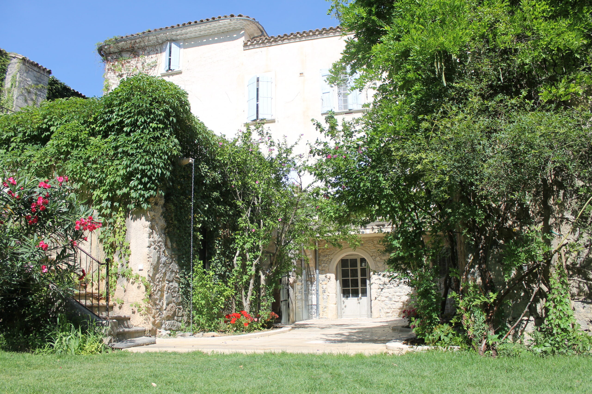
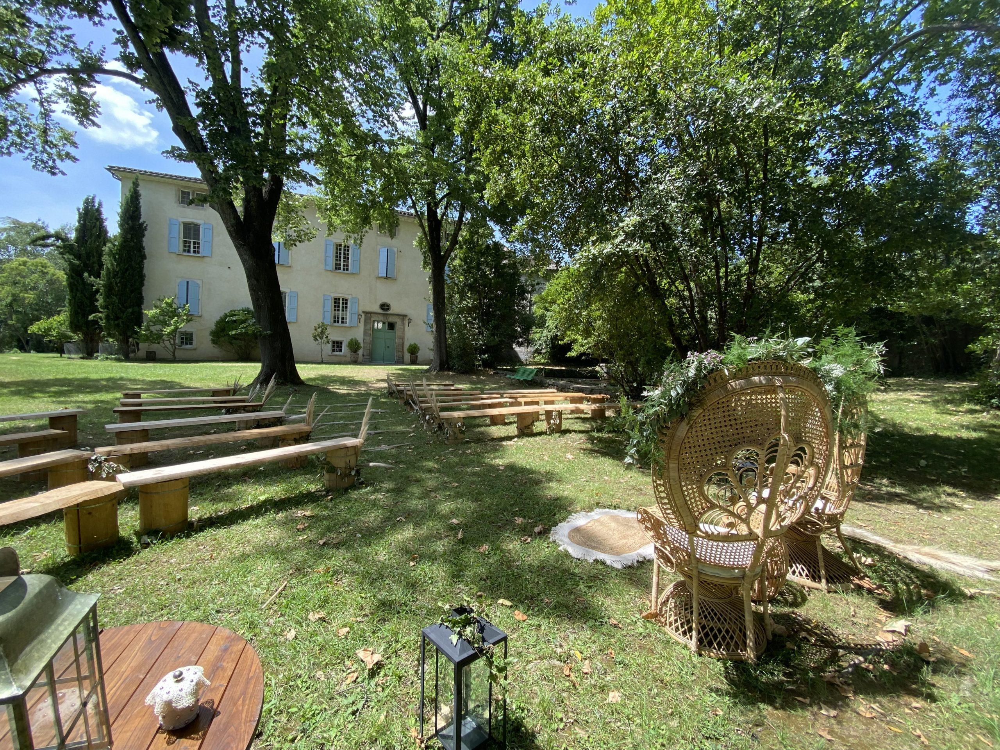

<section class="relative w-full">
  <div class="flex justify-center items-center flex-col py-10">
    <h2 class="text-xl md:text-3xl font-bold text-center font-serif mb-10">
      Infos pratiques
    </h2>
    <p class="text-center mb-5">
      Vous trouverez dans cette rubrique toutes les infos pour arriver à l'heure à la cérémonie, ainsi que la suite du
      programme !
    </p>
    <p class="text-center mb-3">
      ***
    </p>
    <p class="text-center mb-10">
      Si vous ne l'avez pas encore fait, merci de nous préciser certaines informations via ce questionnaire :
      <b><a href="confirmer.html">Questionnaire Yann & Juliette</a></b>
    </p>
    <hr style="border: solid 1px rgba(0,0,0,0.3); width: 100px;" class="mb-10" />
    <h3 class="text-xl md:text-2xl font-bold font-serif text-center mb-10">
      Le lieu
    </h3>
    <p class="mb-5">
      La journée du mariage ainsi que le brunch du lendemain se derouleront au <b>château de
        Saint-Félix-De-Pallières</b>
      dans le Gard aux portes du parc national des <b>Cévennes</b> :
    </p>
    <p class="mb-5 text-center italic">
      Le château <br>
      30140 Saint-Félix-De-Pallières
    </p>
    <div class="flex flex-wrap justify-center mb-10">
      
      
    </div>
    <hr style="border: solid 1px rgba(0,0,0,0.3); width: 100px;" class="mb-10" />
    <h3 class="text-xl md:text-2xl font-bold font-serif text-center mb-10">
      Le programme
    </h3>
    <p class="mb-5">
      <b>
        16h :
      </b>
      Cérémonie laïque
    </p>
    <p class="mb-5">
      <b>
        17h :
      </b>
      Photos
    </p>
    <p class="mb-5">
      <b>
        18h :
      </b>
      Vin d'honneur
    </p>
    <p class="mb-5">
      <b>
        20h :
      </b>
      Dîner
    </p>
    <p class="mb-5">
      <b>
        À partir de 22h30 :
      </b>
      Soirée dansante
    </p>
  </div>
</section>